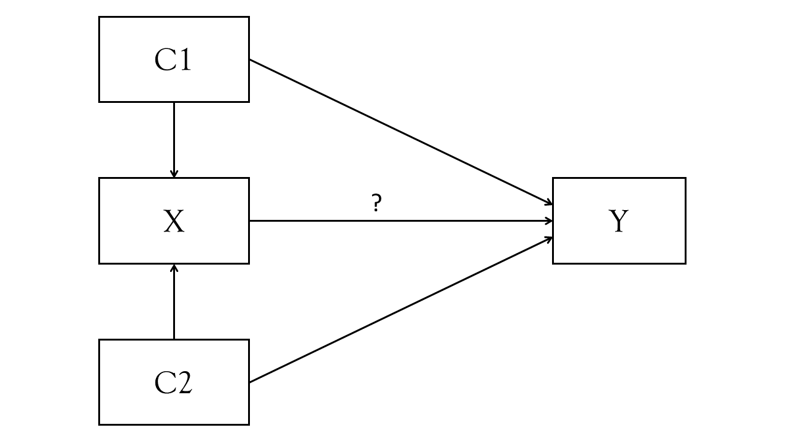
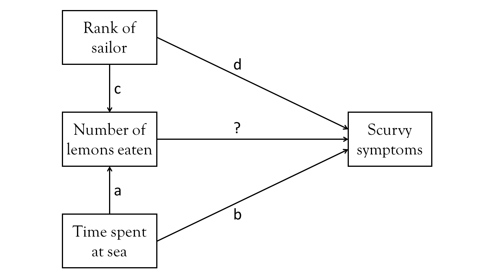
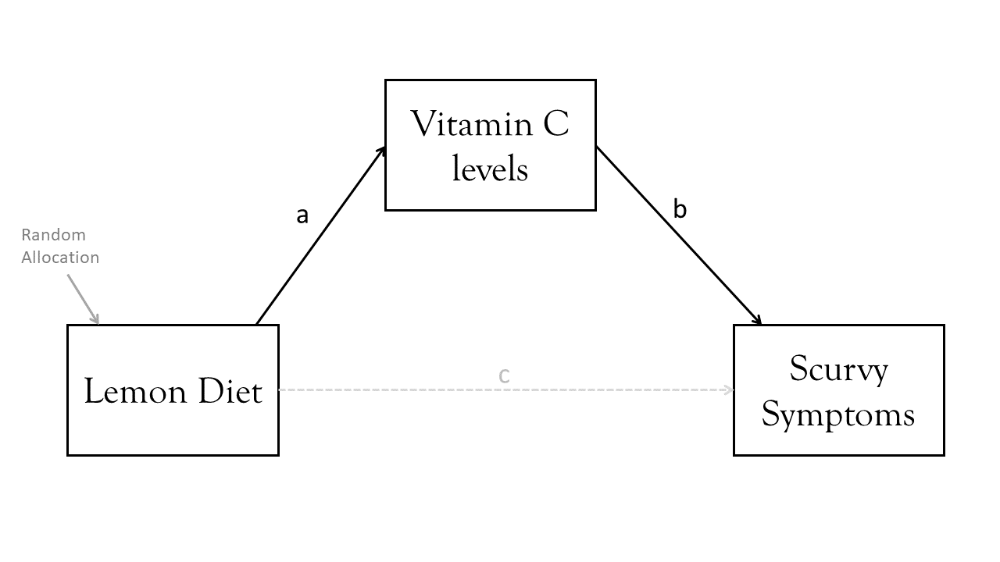
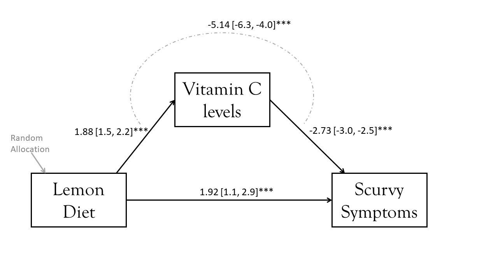
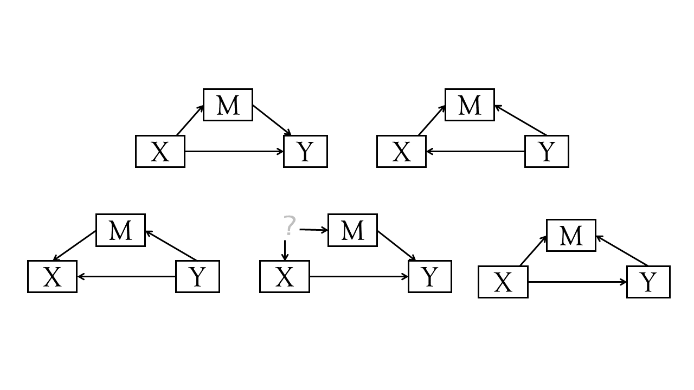
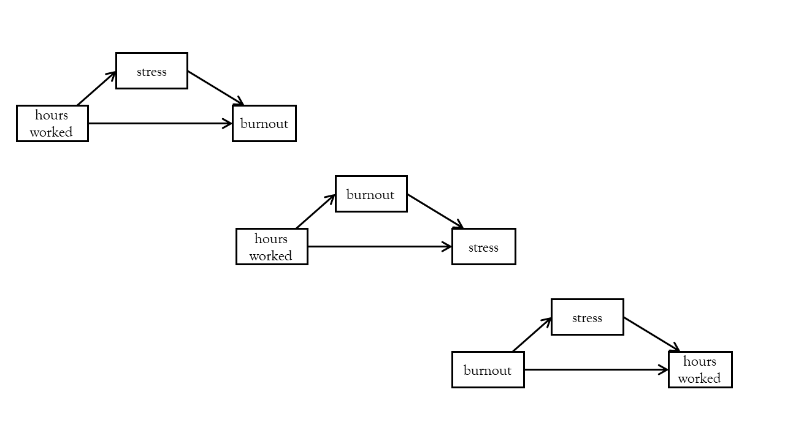
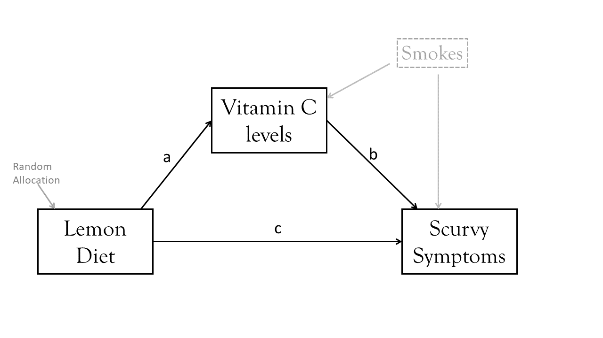
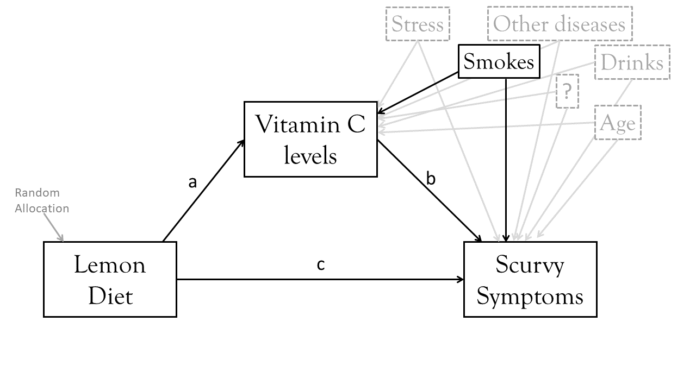

7: Mediation
This reading:
- A very brief overview of the key idea of “mediation”
- How to do path mediation in R using lavaan
- Some strong cautions about mediation analyses
What and How?
In most of our learning of statistics so far, we have been focusing on research questions that require us to estimating associations between two variables (the basic things like t-tests, cor.tests etc), sometimes controlling for other variables (regression models!), or depending on other variables (interactions!) and sometimes trying to also explicitly model the hierarchical structure in the data (mixed effects models!).
Sometimes, the end goal is just to get out something descriptive or associational (“X tends to co-occur with Y”), and sometimes our aim is to try and estimate an ‘effect’ (“if we change X, this is what happens to Y”1). When we can justify using words like “effect” and other language that implies a certain degree of causality2, we are working with theoretical models that would look something similar to Figure 1. The path from X to Y (the thing we’re interested in, labelled with a ?) as “the effect of X on Y”, and we might use something like lm(Y ~ C1 + C2 + X) to get our estimated effect. We control for C1 and C2 because our understanding (i.e., Figure 1) indicates that not doing so could bias our estimate of the effect of X on Y.
As a silly example, suppose we are back in the days of pirates (but somehow still had access to R!3), and we wanted to know what the effect of eating lemons is on the severity of scurvy4. We collect data from ships coming back into port, and record 4 variables: length of time at sea; the sailors rank, the number of lemons they ate, and then we assess the severity of their scurvy symptoms.
A diagram such as Figure 2 displays what we believe about the relationships between these variables. Sailors who spend more time at sea will probably eat more lemons (path a), and they will also have more time at sea to develop scurvy (path b). Higher ranking sailors will probably have more access to lemons (path c), and will potentially have more hygeinic conditions meaning fewer scurvy symptoms (path d). Finally, the bit we want to actually estimate is the change in scurvy symptoms when eating more lemons (path ?).

If this picture is a good representation of reality, then fitting a model lm(Scurvy ~ nLemons) wouldn’t accurately estimate our path of interest (the one labelled ?). The people we see who have had more Lemons would be those who have been at sea longer, and so would also have more scurvy symptoms. But our model doesn’t know that, so it might even end up estimating that eating lemons gives you more scurvy!
We would want our model to adjust for time-spent-at-sea and rank of sailor, so that it estimates the effect of eating more lemons, while holding constant those two variables (i.e., what differences in scurvy symptoms would we see between two sailors of the same rank and who have been at sea for the same length of time, but where one has eaten an extra lemon?)
Code
scurvy1 <- read_csv("https://uoepsy.github.io/data/lv_scurvy1.csv")
mu <- lm(ScurvySymptoms ~ nLemons, data = scurvy1)
ma <- lm(ScurvySymptoms ~ rank + at_sea + nLemons, data = scurvy1)lm(ScurvySymptoms ~ nLemons)- coefficient for nLemons: \(b = 0.04, t(198) = 0.58, p = 0.56\)
- conclusion: no evidence that lemons do anything for scurvy…
- coefficient for nLemons: \(b = 0.04, t(198) = 0.58, p = 0.56\)
lm(ScurvySymptoms ~ rank + at_sea + nLemons)- coefficient for nLemons: \(b = -0.28, t(192) = -4.6, p < .001\)
- conclusion: eating more lemons reduces scurvy symptoms!
- coefficient for nLemons: \(b = -0.28, t(192) = -4.6, p < .001\)
Questions about a path like this are essentially asking “what” questions — we are ultimately asking “what is the effect of X on Y?”. But there are other questions we might ask, such as “How does X affect Y?”. This is a very open question, but we could make it more specific by asking something such as “Does X affect Y via M?”.
Continuing our example, we might ask “does eating lemons reduce scurvy because of Vitamin C?”. Suppose that we do a randomised trial, where we send 100 sailors off with a diet of 1 lemon per week, and another 100 sailors off with no lemons whatsoever. This is a great approach, because it avoids the problems of Figure 2 where we had confounding variables). When the sailors all come back, we measure their levels of vitamin C, and assess them for scurvy.
Our diagram is now something like this:

Note that there could still be an arrow directly from Lemons to Scurvy, because there might be something else about eating lemons that leads to changes in scurvy.
This idea is referred to as “mediation”. In the pattern above, the vitamin C levels “mediate” the effect of lemons on scurvy. If “what” questions are concerned with estimating the path from predictor X to outcome Y, then with mediation, we are concerned with decomposing this path and asking how much (if any) of it goes via some mediator M.
This means there actually three different “effects” we are looking at here. A total effect, a direct effect, and an indirect effect.
Direct, Indirect and Total effects
If we have a variable \(X\) that we take to ‘cause’ variable \(Y\), then our path diagram will look like Figure 4, in which path \(c\) is the total effect. This is the unmediated effect of \(X\) on \(Y\).
However, the effect of \(X\) on \(Y\) could in part be explained by the process of being mediated by some variable \(M\) as well as affecting \(Y\) directly. A path diagram representing this theoretical idea of ‘mediation’ is shown in Figure 5. In this case, path \(c'\) is the direct effect, and \(a \times b\) makes up the indirect effect. The total effect can be retrieved by taking the sum of direct and indirect: `\((a \times b) + c'\).
optional: why a x b?
Our two formulas here for the two endogenous variables (the outcome Y and the mediator M) are:
- \(Y_i = b\times M_i + c' \times X_i\)
- \(M_i = a\times X_i\)
We can substitute 2 into 1
- \(Y_i = b\times(a\times X_i) + c' \times X_i\)
From which we can see that the effect of X on Y is in two parts: \(b \times a\), and \(c'\), and the total effect is \(Y_i = ((a \times b) + c') \times X_i\).
You will find in some areas people talk about the ideas of “complete” vs “partial” mediation.
- Complete mediation is when \(X\) does not influence \(Y\) other than its influence through \(M\) (therefore path \(c'\) would not be significantly different from zero).
- Partial mediation is when the path from \(X\) to \(Y\) is reduced in magnitude when the mediator \(M\) is introduced, but still different from zero.
- The Proportion Mediated is the amount of the total effect of \(X\) to \(Y\) that goes via \(M\). i.e. \(\frac{a \times b}{c}\) in the images above.
What is the effect of the lemon diet
Note that if our question is a “what” question, such as trying to estimate what the effect of being on a Lemon diet is on sailors’ scurvy symptoms, then we do not want to adjust for variables that are mediators.
So just because you have data on three variables: LemonDiet,VitC, and ScurvySymptoms, if you want to know what the diet does for scurvy, we shouldn’t include VitC in the model. If we do, then we essentially remove all of the effect we are looking for:
Code
scurvy2 <- read_csv("https://uoepsy.github.io/data/lv_scurvy2.csv")
m1 <- lm(ScurvySymptoms ~ vitC + LemonDiet, data = scurvy2)lm(ScurvySymptoms ~ vitC + LemonDiet)
- coefficient for LemonDiet: \(b = 1.92, t(198) = 4.31, p = 0\)
- conclusion: no evidence that the Lemon Diet does anything for scurvy…
An intuition for this is to think of what the coefficient means. It is the change in Scurvy symptoms from being on the Lemon Diet (compared to not being on the diet), for people who have the same levels of Vitamin C. But we are theorising here that the Lemon Diet is the thing that changes people’s vitamin C levels, so why would we want to hold vitamin C constant in order to estimate the efficacy of the diet?
Mediation in lavaan
You may notice that the diagram representing mediation (e.g., Figure 3) looks just like another path diagram. In fact, we’ve actually already seen “mediation” in the Chapter introducing path analysis, where Example 3 had variable “M” as a mediator of the effect of “X” on “Y”.
So it is hopefully no surprise that one way to estimate mediation is to use path analysis.
Our Lemon Diet -> Vitamin C -> Scurvy example can be fitted as so:
library(tidyverse)
library(lavaan)
scurvy2 <- read_csv("https://uoepsy.github.io/data/lv_scurvy2.csv")
mod <- "
ScurvySymptoms ~ vitC + LemonDiet
vitC ~ LemonDiet
"
mod.est <- sem(mod, data = scurvy2)
summary(mod.est)...
...
Regressions:
Estimate Std.Err z-value P(>|z|)
ScurvySymptoms ~
vitC -2.734 0.140 -19.494 0.000
LemonDiet 1.918 0.442 4.345 0.000
vitC ~
LemonDiet 1.880 0.179 10.524 0.000
...
...Note that in the section of the summary titled “Regressions:”, we can see the various paths - we get the direct effect (ScurvySymptoms ~ LemonDiet), and we can see the constituent parts of the indirect effect (ScurvySymptoms ~ VitC and VitC ~ LemonDiet).
What we might want to know, however, is if the whole “indirect effect” is significant. The indirect effect, remember, is the product of paths X->M and M->Y. We can’t say there is evidence of mediation just because one of the constituent parts is significant.
In lavaan, we can create “defined parameters”, which are essentially calculations that are derived from various other estimates. When we then fit the model, we will get the calculated indirect effect as well as a standard error for it! And while we are at it, we can estimate the total effect X->Y.
To do this, we use a new operator, :=.
“This operator ‘defines’ new parameters which take on values that are an arbitrary function of the original model parameters. The function, however, must be specified in terms of the parameter labels that are explicitly mentioned in the model syntax.” 5.
The labels are entirely up to us, we can use “a”, “b” and “c”, or “dougal”, “dylan” and “ermintrude”, they’re just labels!
mod <- "
ScurvySymptoms ~ b*vitC + c*LemonDiet
vitC ~ a*LemonDiet
indirect := a*b
total := (a*b)+c
"There is one final thing to consider, and that is how we estimate the standard error for the indirect effect.
Because we are computing our indirect effect as the product of the sub-component paths, this result in the estimated indirect effect rarely following a normal distribution, and makes our usual analytically derived standard errors & p-values inappropriate.
Instead, bootstrapping has become the norm for assessing sampling distributions of indirect effects in mediation models (remember, bootstrapping involves resampling the data with replacement, thousands of times, in order to empirically generate a sampling distribution).
Easy bootstrapping in lavaan
# specify se = "bootstrap"
mod.est <- sem(model_formula, data=my_data, se = "bootstrap")
# to print out the confidence intervals:
summary(mod.est, ci = TRUE)Continuing with our Lemons -> VitC -> Scurvy idea, we would adjust our model to also estimate the indirect and total effects, and then estimate the whole thing by bootstrapping.
Remember, bootstrapping is a fundamentally random process (it involves re-sampling with replacement from our sample, multiple times). This means the standard errors and confidence intervals will change slightly each time we run it!
mod <- "
ScurvySymptoms ~ b*vitC + c*LemonDiet
vitC ~ a*LemonDiet
indirect := a*b
total := (a*b)+c
"
mod.est <- sem(mod, data = scurvy2, se = "bootstrap")
summary(mod.est, ci = TRUE)...
Regressions:
Estimate Std.Err z-value P(>|z|) ci.lower ci.upper
ScurvySymptoms ~
vitC (b) -2.734 0.134 -20.327 0.000 -2.997 -2.468
LemonDiet (c) 1.918 0.452 4.241 0.000 1.051 2.851
vitC ~
LemonDiet (a) 1.880 0.180 10.420 0.000 1.504 2.216
...
...
Defined Parameters:
Estimate Std.Err z-value P(>|z|) ci.lower ci.upper
indirect -5.138 0.583 -8.821 0.000 -6.301 -3.976
total -3.220 0.611 -5.268 0.000 -4.395 -2.012We can add these estimates to our diagram to present the model, as in the image below. Note that we do have a significant direct effect of the Lemon Diet on Scurvy — i.e., it looks like something about lemons other than their vitamin C seems to influence Scurvy (and it’s positive, so although the Lemon Diet has a total negative effect on Scurvy because of the effects of vitamin C, something else about lemons actually increases Scurvy?6).

optional: what exactly does the indirect effect represent?
The indirect effect that we have estimated here has a value of -5.14, but what exactly does that represent? Typically people go no further in their interpretation of the indirect effect than “The effect of X on Y through M”.
If you want to make this more explicit, the indirect effect estimate is the amount by which the outcome Y changes when the predictor X is held constant, and the mediator M changes by however much it would have changed had the predictor increased by one.
We can see this a bit clearer if we write down the prediction equations for VitC and ScurvySymptoms, and then see how it changes when we move from LemonDiet = 0 to LemonDiet = 1. We’re going to ignore intercepts for now because it makes it harder to see how this works (we can get them out of the model if we really want them).
| LemonDiet | vitC | ScurvySymptoms |
|---|---|---|
| \(= (a \times LemonDiet)\) | \(= (c' \times LemonDiet) + (b \times vitC)\) | |
| 0 | \(= (1.880 \times LemonDiet)\) \(= (1.880 \times 0)\) \(= 0\) |
\(= (1.918 \times LemonDiet) + (-2.734 \times vitC)\) \(= (1.918 \times 0) + (-2.734 \times 0)\) \(= 0\) |
| 1 | \(= (1.880 \times LemonDiet)\) \(= (1.880 \times 1)\) \(= 1.880\) |
\(= (1.918 \times LemonDiet) + (-2.734 \times vitC)\) \(= (1.918 \times 1) + (-2.734 \times 1.880)\) \(= (1.918) + (-5.14)\) |
We can see the -5.14 at the bottom here. It’s the amount that ScurvySymptoms changes if vitC increases by the amount it would increase when moving from LemonDiet 0 to LemonDiet 1. But it’s separate from the amount that ScurvySymptoms increases directly because LemonDiet moves from 0 to 1 (this would be the 1.988 bit).
what about “model fit”?
One thing we haven’t touched upon here is that in our continuing example, the model had zero degrees of freedom! Uh-oh! Did we not want to have some degrees of freedom in order to estimate various metrics of model fit?
summary(mod.est)...
Model Test User Model:
Test statistic 0.000
Degrees of freedom 0
...In this case, we’re okay. Our aim in mediation is not so much to evaluate model fit, but rather we are wanting parameter estimation: we want to estimate the magnitude, direction, and significance of a specific path (the indirect effect).
That said, this lack of model fit raises an interesting point about mediation, which is that all of the models in displayed in Figure 6 will fit equally well (i.e., perfectly!)

What if I want standardised estimates?
The lavaan package will easily give us standardised estimates if we just ask for them in the summary, using something like summary(mod.est, standardized = TRUE, ci = TRUE).
This will adds some extra columns to our output: Std.lv (latent variables are standardised) and Std.all (everything is standardised). In models without any latent variables, the Std.lv column won’t be any different from your original estimates. However, the confidence intervals would all be based on our original estimates in the raw units.
What we can do instead is just ask for the standardizedSolution() of the model:
standardizedSolution(mod.est) lhs op rhs label est.std se z pvalue
1 ScurvySymptoms ~ vitC b -0.944 0.033 -28.93 0
2 ScurvySymptoms ~ LemonDiet c 0.210 0.050 4.24 0
3 vitC ~ LemonDiet a 0.597 0.045 13.39 0
4 ScurvySymptoms ~~ ScurvySymptoms 0.302 0.035 8.57 0
5 vitC ~~ vitC 0.644 0.053 12.09 0
6 LemonDiet ~~ LemonDiet 1.000 0.000 NA NA
7 indirect := a*b indirect -0.564 0.054 -10.46 0
8 total := (a*b)+c total -0.353 0.061 -5.76 0
ci.lower ci.upper
1 -1.008 -0.880
2 0.113 0.308
3 0.510 0.684
4 0.233 0.371
5 0.539 0.748
6 1.000 1.000
7 -0.669 -0.458
8 -0.473 -0.233CAUTIONS
There are many many problems with mediation analyses. We’ll introduce just a couple of them here.
The take-home message here is not necessarily “never do mediation analyses”, but more a note to “proceed with the utmost caution”, and to always engage actively and transparently with these limitations (rather than pretending that they do not exist!)
1. “three correlations in a trenchcoat”
One common problem comes with doing “cross-sectional” mediation - i.e., you measure everything — X, M and Y — all at once, and then assess how much m mediates X->Y. The problem here is that we’re making very strong directional assumptions that X causes M (and not vice versa) and M causes Y (and not vice versa). This is especially common in psychology, where the things we are measuring a pretty difficult to measure! For example, lets suppose we do a survey and everybody gets scored on three variables: hours_worked, stress and burnout. We’re making a strong assumption by fitting model A, when model B or C could be just as valid, and will fit the data equally well (remember all these models have zero degrees of freedom - they all ‘fit’ perfectly!). One can make reasonable arguments for all of these — i.e., is it that if people work more hours then they feel more stressed? or could it be that if people stress about work, perhaps they tend to work more hours to try to alleviate the stress?

I am borrowing the phrase “three correlations in a trenchcoat” here from a really great blog by Julia Rohrer7. The idea here is that really all we have when we do a cross-sectional mediation is a set of correlations, and we are dressing them up to tell make some very strong causal claims that are likely not warranted.
2. Confounding of M->Y
A potentially bigger problem with mediation is that confounding variables are still a problem, even when doing randomised experiments! Although it is possible to randomly allocate people to the predictor X (thus avoiding any confounding between X and Y), we can’t also randomly allocate people to M. This means that the M->Y path is open to being biased by unmeasured confounders.
Take for example our Lemon Diet study. A confound of the relationship between Vitamin C and Scurvy is the amount that people smoke — smoking depletes vitamin C levels in the body, and also weakens the immune system, increasing susceptibility to Scurvy. So really, our model is missing an important part that will affect our resulting estimates:

If we happened to think ahead and we planned for such a problem, we might have measured the amount that the sailors smoked, and we could include it in the model like so:
mod <- "
ScurvySymptoms ~ smokes + b*vitC + c*LemonDiet
vitC ~ smokes + a*LemonDiet
indirect := a*b
total := (a*b)+c
"
mod.est <- sem(mod, data = scurvy2, se = "bootstrap")
summary(mod.est, ci = TRUE)...
...
Regressions:
Estimate Std.Err z-value P(>|z|) ci.lower ci.upper
ScurvySymptoms ~
smokes 1.005 0.079 12.752 0.000 0.841 1.153
vitC (b) -1.630 0.133 -12.238 0.000 -1.915 -1.383
LemonDiet (c) -0.055 0.386 -0.143 0.886 -0.782 0.727
vitC ~
smokes -0.364 0.032 -11.209 0.000 -0.429 -0.304
LemonDiet (a) 1.843 0.141 13.102 0.000 1.559 2.108
...
...
Defined Parameters:
Estimate Std.Err z-value P(>|z|) ci.lower ci.upper
indirect -3.005 0.339 -8.870 0.000 -3.706 -2.357
total -3.060 0.350 -8.734 0.000 -3.720 -2.343
And look! Our indirect effect is much smaller, and the direct path from LemonDiet to ScurvySymptoms is no longer significant8. The problem that this opens up is that smoking is probably not the only confounder. There are probably loads and loads of things that we might not have thought of (e.g., Figure 8), and might not be able to measure very well. Which makes it very difficult to draw robust conclusions from mediation analyses.

EXTRA: mediation with separate models
The ‘old school’ way of doing mediation was to follow Baron & Kenny 1986, and to conduct mediation analysis in a simpler way by using three separate regression models.
- \(y \sim x\)
- \(m \sim x\)
- \(y \sim x + m\)
Step 1. Assess the total effect of the predictor on the outcome y ~ x. This step establishes that there is an effect that may be mediated.
mod1 <- lm(ScurvySymptoms ~ LemonDiet, data = scurvy2)
summary(mod1)$coefficients Estimate Std. Error t value Pr(>|t|)
(Intercept) 16.32 0.429 38.07 4.90e-93
LemonDiet -3.22 0.606 -5.31 2.91e-07Step 2. Estimate the effect of the predictor on the mediator m ~ x:
mod2 <- lm(vitC ~ LemonDiet, data = scurvy2)
summary(mod2)$coefficients Estimate Std. Error t value Pr(>|t|)
(Intercept) 2.94 0.127 23.2 2.35e-58
LemonDiet 1.88 0.180 10.5 1.06e-20Step 3. Estimate the effects of the predictor and mediator on the outcome y ~ x + m. We need to show that the mediator affects the outcome variable.
mod3 <- lm(ScurvySymptoms ~ LemonDiet + vitC, data = scurvy2)
summary(mod3)$coefficients Estimate Std. Error t value Pr(>|t|)
(Intercept) 24.37 0.487 50.08 5.05e-114
LemonDiet 1.92 0.445 4.31 2.55e-05
vitC -2.73 0.141 -19.35 1.99e-47Step 4. If Steps 1-3 all show effects of y~x, m~x and y~m|x9 respectively, then we can assess mediation. We need to look at the how effect of the predictor on the outcome changes when we control for the mediator. This is from the same third model above. If the effect of the predictor is reduced, then we have mediation. If it is now zero, then we have complete mediation.
This method is generally less optimal than using path models. Following the “separate models” approach10 and requiring certain effects to be significant can sometimes lead to erroneous conclusions. For example, if Y ~ 2*M + -2*X and M ~ 1*X, then the total effect of Y~X would be \((2 \times 1) + -2 = 0\), leading us to say that there is no effect that could be mediated! In part the problems with this approach are because it doesn’t actually estimate the indirect effects, and attempts to determine “is there mediation [Yes]/[No]?” based on the significance of the individual paths. Even if the total effect \(c\) is significantly different from zero and the direct effect \(c'\) is not, this does not imply that the coefficients \(c\) and \(c'\) are different from one another! We therefore need to conduct an extra step (a popular approach is the “Sobel’s test”) in order to asses whether \(c-c'=0\), or to estimate the \(ab\) path via bootstrapping like we do in lavaan.
Perhaps a more relevant issue is that the separate models approach cannot so easily be generalised to situations with multiple mediators, multiple outcomes, or multiple predictors, whereas a path analytic approach can. In addition, both are susceptible to the same concerns of measurement reliability, confounding, predictor-mediator interactions, and the causal directions between variables.
Footnotes
or “if i had done/were to do X=B instead of X=A..”↩︎
estimating an ‘effect’ is difficult in observational research because its hard to figure out what the appropriate set of confounding variables are (let alone make sure you measure them all!).↩︎
no jokes here?↩︎
a disease common on ships between 16th-19th centuries↩︎
more on this below!! see the section on Cautions!↩︎
one of my favourite writers of stats related content - she has so many useful papers on all sorts of things, so do check them out↩︎
the reason for this is weirdly complex and unintuitive. In our original model, excluding smoking, the direct effect was “the effect of the lemon diet on scurvy, holding vitamin C constant”. If you have two people with the same Vitamin C levels, but one eats lots of lemons and the other eats none, there must be a reason why their Vitamin C levels are the same. There is! It’s because (unbeknownst to the model), one of them smokes a lot!↩︎
read
y~m|xasy~mcontrolling forx↩︎sometimes referred to as “steps approach”↩︎